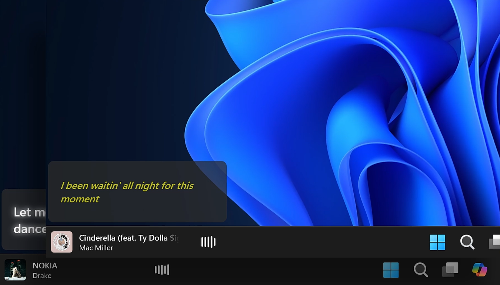
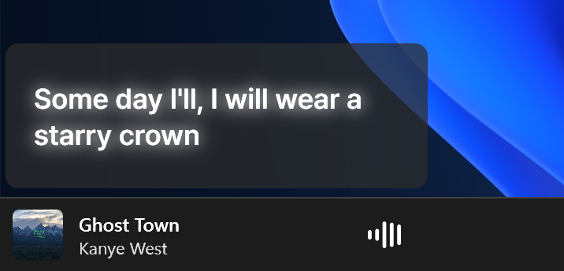
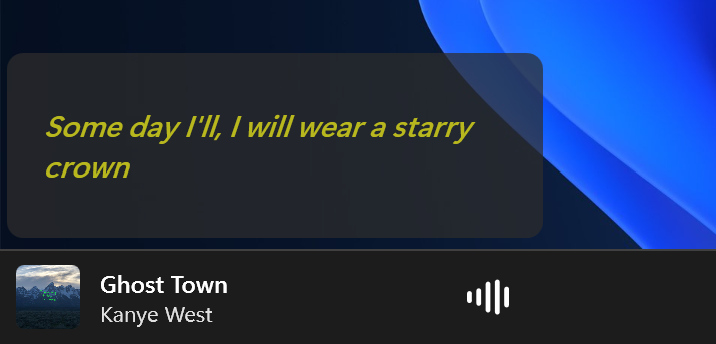
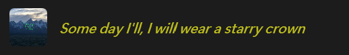
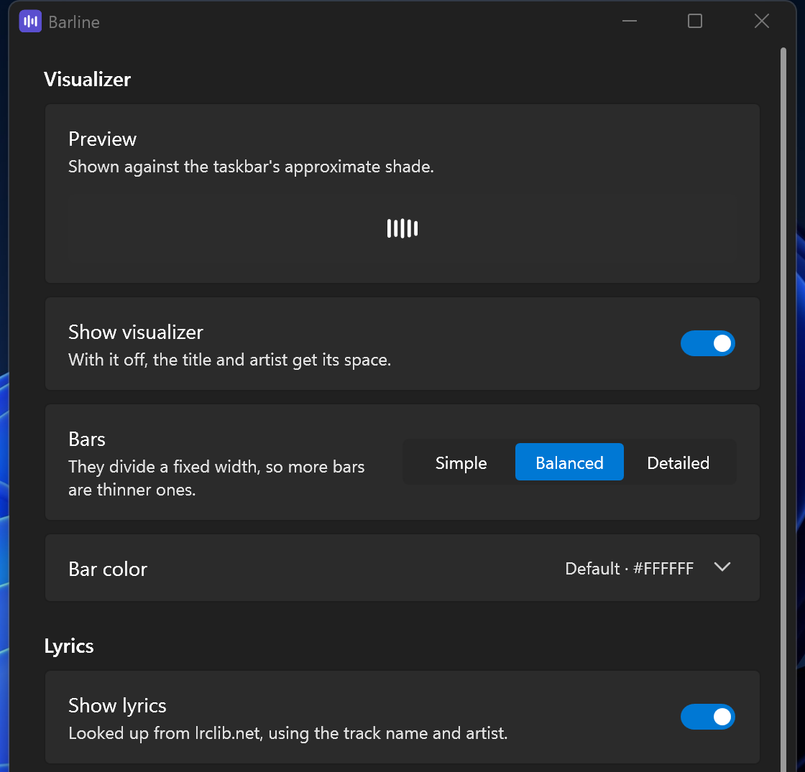

Now playing, on the taskbar
Barline shows album art, the track and artist, a visualizer driven by the audio actually playing, and lyrics in time with the song. It sits where the Widgets button normally does.
Free and open source. Windows 11. Nothing else to install.

It reads as part of Windows
Barline paints no background of its own, so the taskbar's own material shows through it. That is what keeps it correct through every theme, accent colour and transparency setting without imitating any of them.
It follows the taskbar rather than sitting on top of it. Change your display scaling, turn on auto-hide, or open something fullscreen, and it behaves the way the rest of the taskbar does.
The bars are real
The visualizer reads the audio your computer is actually playing rather than running an animation to a beat it guessed. Choose four, five or six bars, and the row stays the same width whichever you pick.
Bar colour can follow your Windows accent, the album art, or a colour you choose. Whatever it works out to is corrected until it stands out against the taskbar, so a dark cover cannot leave you with bars you can barely see.
Lyrics, in time with the song
Words light up as they are sung. Lyrics come from LRCLIB, and they go in a floating panel above the taskbar with room for a full line, in a look you choose.


Or inside the widget itself, in place of the title until you hover it.

Lyrics are off until you turn them on, because looking a track up sends its title and artist to LRCLIB. If you have better timings than the database does, drop in your own .lrc file and it takes priority.
Make it yours
Font, size, weight, colour, effects, background and corner radius. Every change applies as you make it, with the widget on screen the whole time, so you are always looking at the result rather than a preview of it.
Styles are saved as preset files. Four come with the app, and one someone sends you can be dropped straight into the folder.

It keeps to itself
No telemetry, no account, and no network access at all unless you switch lyrics on. When you do, a lookup sends the track title and artist and nothing else. Everything Barline saves stays on your computer.
Install it
Requires Windows 11. Download the latest release, unzip it anywhere, and run Barline.exe. The build carries its own runtime, so there is nothing else to install.
First, free up the space it lives in:
- Settings, then Personalization, then Taskbar
- Under Taskbar items, turn Widgets off
Right-click the widget for settings, or use the icon in the notification area. To build it yourself instead, see CONTRIBUTING.md.